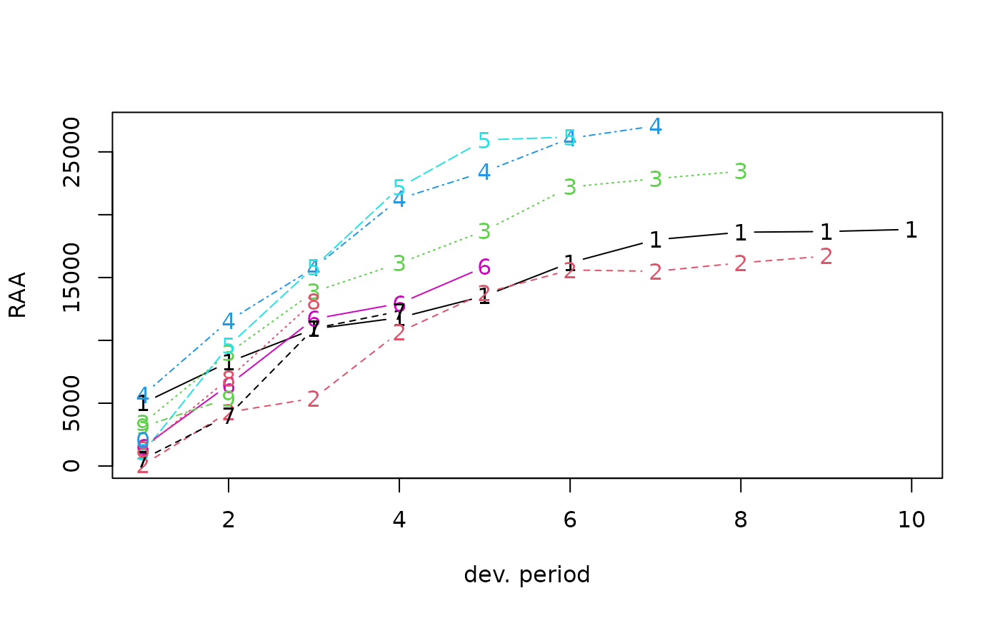
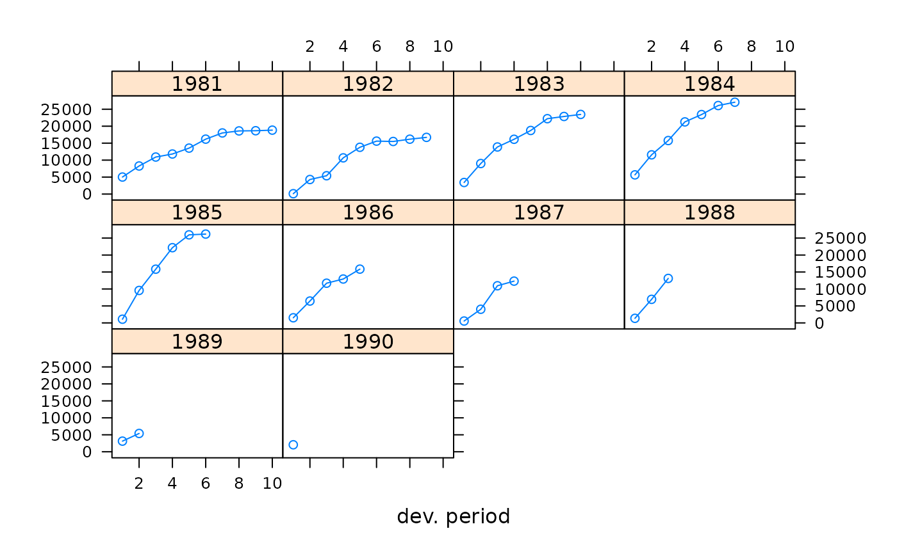

Run off triangle of accumulated claims data
RAA.RdRun-off triangle of Automatic Factultative business in General Liability
Usage
data(RAA)References
See Also: Which Stochastic Model is Underlying the Chain Ladder Method?, Thomas Mack, Insurance Mathematics and Economics, 15, 2/3, pp133-138, 1994
P.D.England and R.J.Verrall, Stochastic Claims Reserving in General Insurance, British Actuarial Journal, Vol. 8, pp443-544, 2002
Examples
RAA
#> dev
#> origin 1 2 3 4 5 6 7 8 9 10
#> 1981 5012 8269 10907 11805 13539 16181 18009 18608 18662 18834
#> 1982 106 4285 5396 10666 13782 15599 15496 16169 16704 NA
#> 1983 3410 8992 13873 16141 18735 22214 22863 23466 NA NA
#> 1984 5655 11555 15766 21266 23425 26083 27067 NA NA NA
#> 1985 1092 9565 15836 22169 25955 26180 NA NA NA NA
#> 1986 1513 6445 11702 12935 15852 NA NA NA NA NA
#> 1987 557 4020 10946 12314 NA NA NA NA NA NA
#> 1988 1351 6947 13112 NA NA NA NA NA NA NA
#> 1989 3133 5395 NA NA NA NA NA NA NA NA
#> 1990 2063 NA NA NA NA NA NA NA NA NA
plot(RAA)

plot(RAA, lattice=TRUE)
